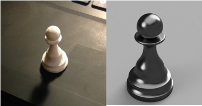
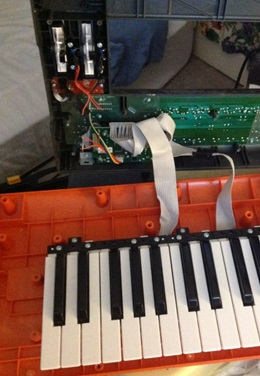
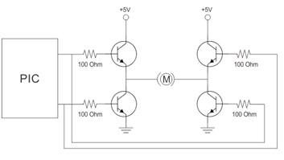

Hi! Welcome to my site :)
I am a computer science student and hobbyist who's taken courses at Dal and NSCC. Now I am looking for freelance work and/or an internship.
I made this site as an easy way to get examples of my work to people, and I expect it will transform over the year. Cheers!
3D Model
This pawn is an original 3d design that I made in Fusion 360. Above we can see the real thing next to a rendering of it. It was printed with PLA filament on a Makerbot unit and took about half an hour.
The print did well, however next time I will use ABS if possible. In my opinion it is still slightly rough at close inspection, and if I use ABS I can make it smooth and shiny like the render by giving it an acetone vapour bath. An acetone vapour bath is a smoothing technique in which the printed item is placed under a larger container. The container, perhaps a coffee can, has paper towel fixed to its insides with magnets. The paper towel has been saturated with acetone, which can melt ABS plastic. After an hour or so, the vapours from the paper towel uniformly melt the printed ABS giving it a shiny quality similar to the render.
Keyboard Pitchwheel Fix
I enjoy using studio software and making music. On a keyboard, there is a wheel called the pitchbend that, not surprisingly, modulates an instrument’s pitch. It is a potentiometer inside the wheel that sends voltage information to the computer, which modifies the pitch accordingly. Over the past several months my keyboard has started acting up by randomly sending pitch information to the computer. This is highly irritating when you are trying to play something. It basically made my keyboard totally useless. With my knowledge of circuits and hardware, I opened up the keyboard and was able to determine that it was being caused by the hardware and it not a software driver issue. I am waiting on the appropriate potentiometer to replace the current faulty one. In the meantime I have regained utility of my keyboard by soldering in some resistors to simulate the voltage of an unmoved pitchbend. It turns out that one can’t just cut the cords and leave it like that because they would be left in a state that is called ‘floating’. This is a state that is not a fixed voltage and is subject to noise from charges in the air, which results in constantly random pitch information being sent. Below is a picture of the surgery. An old Jazz history professor of mine once told me of how there is something electronic musicians do called circuit bending. Circuit bending is when people hack their hardware to install new sensors and modulation routes. With my newly gained knowledge of circuitry, it excites me to think of this as being an option. One could, for example, replace the pitchbend potentiometer with a high frequency oscillator circuit routed through an infrared sensor to imbue an instrument with an FM effect the closer ones hand gets to the sensor. There are other examples of this sort of hackery in music; one artist that utilises interesting sensor mapping hardware is Imogen Heap .
NPN H-Bridge
This H bridge circuit is a staple in mechatronics projects. They are used to change the direction of current flow, typically so that one might control the direction of a motor. There are two contact points that dictate the direction of flow. They use a small input voltage, and the major benefit of using such a device is that it can be sent signals intelligently from a controller like an Arduino or Raspberry Pi.
I’ve used a voltage regulator that I soldered together out of a kit to provide five volts; however, if more power were being used in the circuit for multiple motors, then I would install flyback diodes. There is an effect when using components with electromagnetic fields where upon the collapse of the field, a negative voltage spike is sent back through the circuit. With more power this would likely fry the transistors. This reverse spike is prevented by the flyback diodes which act like a one way valve.
Here is essentially the same design, except I used 330 Ohm resistors instead.
